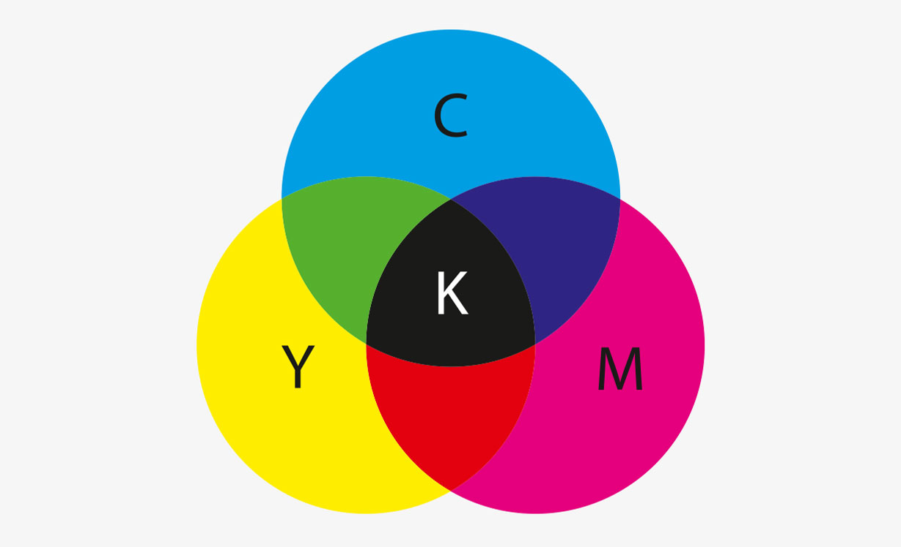

- Kleurmodel: Additief
- Toepassing: Digitale schermen zoals computers, televisies, en camera's
- Principe: Kleuren worden gecreëerd door licht van verschillende golflengten samen te voegen.
- Combinaties:
-> Alle kleuren samen (volledige intensiteit): Wit
-> Geen kleur (geen licht): Zwart
-> Voorbeelden: Rood (255, 0, 0), Groen (0, 255, 0), Blauw (0, 0, 255), Geel (255, 255, 0)
CMY-K (Cyaan, Magenta, Geel - Zwart)
- Kleurmodel: Subtractief
 - Toepassing: Printen en drukwerk
- Principe: Kleuren worden gecreëerd door licht te absorberen en de rest te reflecteren.
- Combinaties:
-> Alle kleuren samen: Zwart (in theorie, maar meestal donkerbruin/grijs, daarom wordt zwarte inkt toegevoegd)
-> Geen kleur (geen inkt): Wit (van het papier)
-> Voorbeelden: Cyaan (100, 0, 0, 0), Magenta (0, 100, 0, 0), Geel (0, 0, 100, 0), Zwart (0, 0, 0, 100)
Pixels
- Definitie: De kleinste eenheid van een digitaal beeld of scherm, vaak een enkel punt of een klein vierkantje.
- Functie: Elke pixel bevat kleurinformatie die bijdraagt aan het volledige beeld. Kleuren in pixels worden meestal weergegeven in RGB (rood, groen, blauw) waarden.
- Eigenschappen: Pixels zijn de bouwstenen van digitale beelden; hoe meer pixels, hoe gedetailleerder en scherper het beeld.
Resolutie
- Definitie: Het aantal pixels per eenheid van oppervlakte, meestal uitgedrukt als breedte x hoogte (bijvoorbeeld 1920x1080).
- Soorten Resolutie:
-> Schermresolutie: Het aantal pixels op een scherm (bijv. 1080p betekent 1920 pixels breed en 1080 pixels hoog).
-> Beeldresolutie: Het aantal pixels in een digitaal beeld, vaak gemeten in megapixels (bijv. een 12 MP camera maakt beelden van 4000x3000 pixels).
-> Beeldresolutie: Het aantal pixels in een digitaal beeld, vaak gemeten in megapixels (bijv. een 12 MP camera maakt beelden van 4000x3000 pixels).
- Impact: Hogere resolutie betekent meer detail en scherpte, maar vereist ook meer opslagruimte en rekenkracht om te verwerken.